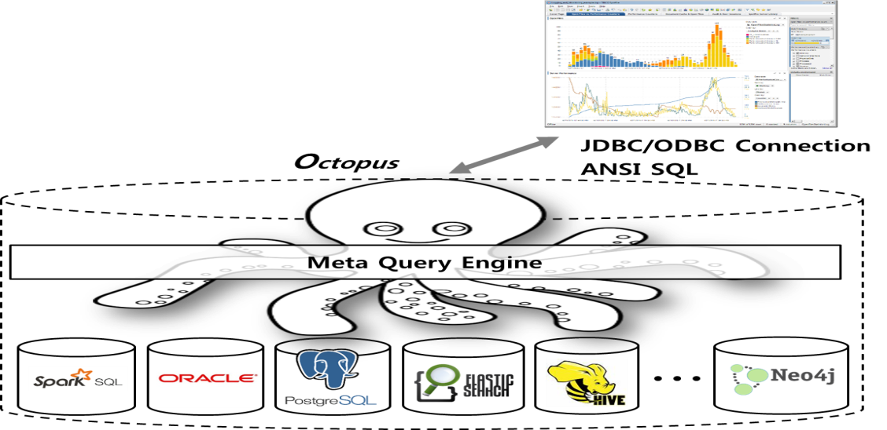
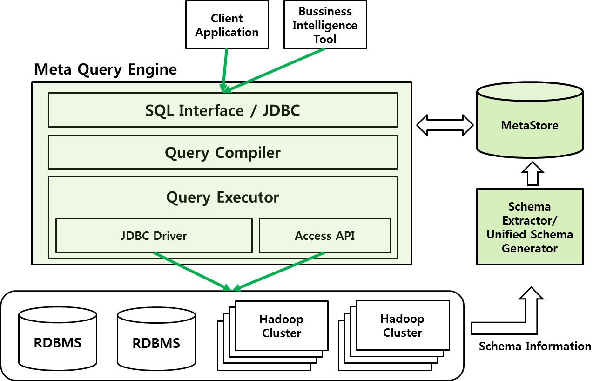

개요¶
매뉴얼에 대하여¶
본 문서는 Octopus의 설치 및 운영에 관한 내용을 담고 있으며, Octopus의 사용자와 운영자를 대상으로 한다. 1장에서는 Octopus가 무엇인지 설명하며, 2장에서는 Octopus의 설치 및 운영에 대해 기술한다. 3장에서는 Octopus에서 제공하는 사용자 도구들을 소개하며, 4장에서는 Octopus에서 수행 가능한 SQL에 대해 자세하게 기술한다. 마지막으로 5장에서는 프로그램에서 Octopus에 연결하는데 필요한 connector에 대해 설명한다.
Octopus 개요¶
최근 전 세계적으로 새로운 형태의 데이터가 각광을 받는 가운데, 이러한 데이터가 급격하게 증가하면서 기존에 사용하던 RDBMS 관리 도구들의 데이터 수집, 저장, 관리, 분석 능력이 이를 따라가지 못하고 있다. 이와 같이 기존의 데이터 관리 도구에서 처리할 수 있는 규모를 넘어서는 크기의 데이터를 빅데이터라고 하며, 이러한 빅데이터를 처리하기 위해 NoSQL, 그래프 데이터베이스 등 다양한 솔루션이 개발되고 있다.
최근에는 데이터의 형태, 크기와 상관없이 오로지 RDBMS만을 사용했던 기존의 데이터 처리 방식을 벗어나, 데이터의 형태와 요구사항에 부합하는 다양한 데이터베이스 솔루션들을 통해 빅데이터를 처리하는 방식으로 나아가고 있으며, 이를 Polyglot Persistence라 한다.
그러나, 이와 같은 Polyglot Persistence 환경에서는 여러 데이터베이스에 분산되어있는 데이터의 통합 및 관리에 어려움이 따른다. 따라서 표준 SQL을 사용하여 서로 다른 여러 데이터베이스들의 데이터에 대한 통합 및 관리가 가능한 통합 질의 시스템인 Octopus를 개발한다.
Octopus 특징¶
Octopus는 표준 SQL를 사용하여 분산 환경에서 서로 다른 여러 데이터베이스(데이터소스)들의 데이터 통합 및 관리를 지원하는 시스템이다. 데이터 이관(ETL) 없이 분산 데이터에 대한 실시간 통합 질의 처리를 목표로 하며, 다음과 같은 특징을 가지고 있다.
- 통합 스키마 뷰
- 사용자는 여러 데이터소스들의 스키마 정보를 하나의 데이터베이스에 대한 스키마 정보로 보여줌
- 통합 질의
- 사용자는 하나의 데이터베이스에 대한 질의를 수행하며, 실제로는 여러 데이터소스에 대한 질의를 수행함
- 하나의 데이터소스에 있는 테이블에 대한 질의를 수행함 (by-pass)
- 여러 데이터소스에 있는 테이블 사이의 조인 질의를 수행함
- 사용자 인증 및 관리
- 사용자 계정 별로 권한을 부여하여 각 데이터베이스에 대한 접근을 제어
- 접근 제어로 인한 보안 강화
- DDL
- 데이터소스 및 사용자 계정의 추가/수정/삭제
- 사용자 계정에 스키마에 대한 권한 부여
- 스키마에 관한 주석 작성
- DML
- 표준 SQL의 SELECT문을 사용한 질의 수행
다음은 Polyglot Persistence 환경에서 Octopus의 역할을 개략적으로 나타낸 그림이다.
Octopus 시스템 구성¶
Octopus 시스템 구성을 그림으로 나타내면 다음과 같다.
- SQL Interface / JDBC
- PostgreSQL client protocol을 사용한 Octopus JDBC 지원
- 통합 스키마 생성
- 관리자가 추가한 데이터소스들에서 스키마 정보를 추출해 통합 스키마 생성
- 메타스토어
- 데이터소스, 스키마, 테이블, 칼럼 정보 저장
- 사용자 계정 및 권한 정보 저장
- JDO(DataNucleus)를 통한 다양한 데이터베이스 지원
- 질의 처리
- 사용자의 SQL을 분석하고, 논리적 실행 계획과 물리적 실행 계획을 생성
- 데이터소스의 데이터를 네트워크로 전송하는 오버헤드를 고려한 최적의 실행 계획 생성
- 물리적 실행 계획을 실행해 결과를 생성
타 시스템과의 차별성¶
Octopus는 여러 데이터소스들에 대한 스키마 정보를 직접 관리하며, 스키마 정보를 바탕으로 질의 처리에 필요한 데이터를 각 데이터소스에서 가공 후 통합 질의를 수행하는 방식을 채택하고 있다. 기존의 시스템들은 아래와 같은 방식을 채택하고 있다.
- SQL-on-Hadoop
- Hive, Tajo, Impala, Hawk는 HBase 등의 다른 저장소에 대한 external table 기능 제공
- RDBMS의 Hadoop 지원
- Oracle, Teradata 등은 external table 기능으로 Hadoop connector 제공
- Data federation server
- Cisco Information Server는 통합 스키마 제공
- Data-Hub
- Toads Bigdata World는 데이터를 중앙 서버에 가져와 질의 처리